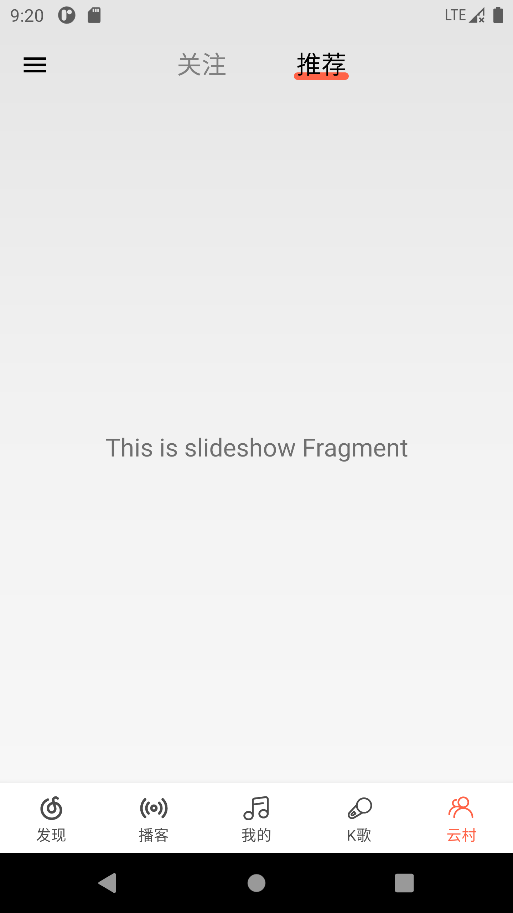

剩下的3个页面一直没有动，其一没有想好接口的处理，接口相比homepage来说都太鸡肋，其二是好些接口都没有找到，目前看仅音乐播放开放了
目前本页仅起了个头，用ViewPager2+Tablayout布局
预览


Tablyout Style
1
2
3
4
5
6
7
8
9
10
11
12
13
14
15
16
17
18
19
20
21
22
23
24
25
26
27
28
29
30
31
| <androidx.appcompat.widget.Toolbar
android:id="@+id/toolbar"
android:layout_width="match_parent"
android:layout_height="?attr/actionBarSize"
app:layout_collapseMode="pin"
app:navigationIcon="@drawable/ic_menu_24"
app:popupTheme="@style/Theme.NeteaseCloudMmusic.PopupOverlay">
<com.google.android.material.tabs.TabLayout
android:id="@+id/tab_layout"
android:layout_width="match_parent"
android:layout_height="wrap_content"
android:layout_marginEnd="64dp"
android:layout_marginBottom="16dp"
android:background="@android:color/transparent"
app:layout_constraintBottom_toBottomOf="parent"
app:layout_constraintEnd_toEndOf="parent"
app:layout_constraintStart_toStartOf="parent"
app:layout_constraintTop_toTopOf="parent"
app:tabGravity="center"
app:tabIndicator="@drawable/tab_indicator_2"
app:tabIndicatorColor="@color/tomato"
app:tabIndicatorHeight="6dp"
app:tabMinWidth="96dp"
app:tabMode="fixed"
app:tabPaddingTop="14dp"
app:tabSelectedTextColor="@color/black"
app:tabTextAppearance="@style/TabLayoutTextStyle"
app:tabTextColor="@color/white50" />
</androidx.appcompat.widget.Toolbar>
|
1
2
3
4
|
<style name="TabLayoutTextStyle">
<item name="android:textSize">20sp</item>
</style>
|
网易出品
网易出口MV/mv/exclusive/rcmd接口是用paging3来实现，整体播放流畅性不错（服务器6）
1
2
3
4
5
6
7
8
9
10
11
12
13
14
15
16
17
18
19
20
21
22
23
| private val adapter by lazy { MvPagingAdapter { startActivity(it) } }
override fun onViewCreated(view: View, savedInstanceState: Bundle?) {
super.onViewCreated(view, savedInstanceState)
adapter.withLoadStateHeaderAndFooter(
header = MvLoadStateAdapter(adapter),
footer = MvLoadStateAdapter(adapter)
)
binding.rvList.apply {
adapter = this@FriendsNeteaseFragment.adapter
layoutManager = GridLayoutManager(requireContext(), 2, GridLayoutManager.VERTICAL, false)
}
lifecycleScope.launchWhenCreated {
viewModel.mv.collect {
adapter.submitData(it)
}
}
}
|
参考
https://developer.android.com/guide/navigation/navigation-swipe-view-2#add_tabs_using_a_tablayout
https://juejin.cn/post/6844903860587200526